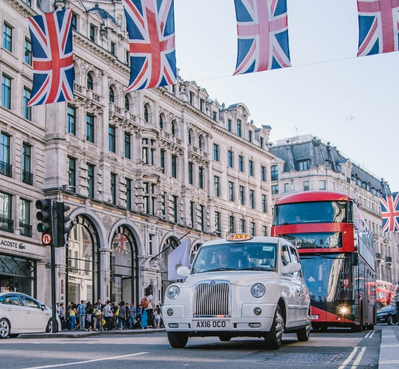
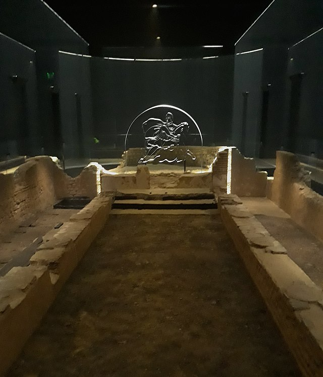
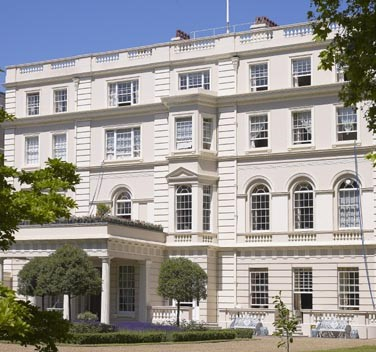
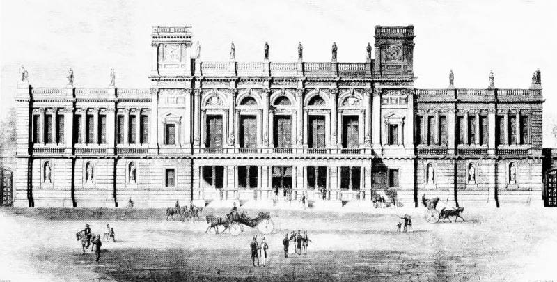

Oxford Street
Welcome to this gallery about historical buildings in London.
We shall explore some interesting buildings that you might find along your way in London.

The London Mithraeum
Let us start this gallery with one of London's oldest buildings. The Mithreaum (named after the god Mithras) was a Ancient Roman temple built around 240 C.E.
There was a notable cult surrounding the god Mithras in Ancient Rome. This mystery religion originated in Persia and included several initiation rites and underground mystery temples, such as the Mithraeum.
The god Mithras is believed to have been born from a rock and to have heroically slayed a sacred bull.
Nelon's Column
This column sits at the center of Trafalgar square and commemorate Admiral Lord Horatio Nelson, who lived from 1758 to 1805.
The column's location is rather appropriate, as Nelson had secured an admirable victory in the naval battle of Trafalgar.
Churchill's War Rooms
During the Second World War, London was repeatedly bombed by the Nazi Germans. Because of suchlike threats, the British government used this underground bunker to oversee operations.
Churchill made several speeches from his underground bedroom. These radio speeches were heard all across the country and beyond.
When you visit the War Rooms, you may notice that the 'Cabinet Room' has a peculiar table formation. The formation consisted of a square that is rather typical for meetings. But, within this square, there is a sitting section for three, which was meant for high-ranking officers of the military. Churchill hoped to pressure such guests with this set-up.

Clarence House
Clarence house lies in the center of London and functions as a royal residence.
Clarence house was built in 1827 and currently functions as the residence for prince Charles and his wife Camilla.

6 Burlington Gardens
The building residing at 6 Burlington Gardens has a rich history.
It was initially built for the University of London, but was subsequently equipped by the Royal Academy of Arts, British Museum and other organizations.
When you pass this site, you may notice the row of statues on top of the structure. These statues surround the building completely and include representatives of ancient culture, such as Aristotle and Cicero, while other figures depict scholars like Alexander Hume.
(End of Gallery)